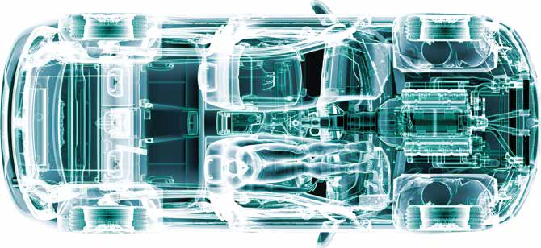

| Field | Value |
|---|---|
| Source | MakingZeroTheHero-Summary-Report.pdf |
A roadmap towards sustainable plastics use in New Zealanddesirability of a pan-sector vision for plastic’s use in New Zealand as a sustainable resource rather than as pollutive and extractive waste.
The roadmap takes a New Zealand plastic industry view on the transition to a New Plastics Economy.
The time is right, the plastic industry is willing, able and wanting, and the public is demanding that a New Zealand New Plastics Economy be brought into being.
With strategy, intent, regulation and clarity of outcome, a New Plastics Economy can be achieved.
But establishing a New Plastics Economy will neither be easy or short term.
barriers and opportunities for the country's plastics industry in the context of a New Zealand New Plastics Economy.
The roadmap summarises short-, medium- and long-term initiatives to transition New Zealand’s plastic industry to a circular economy and highlights three inter-dependent elements needed for a circular future for New Zealand’s plastics:
Infrastructure development
Supply-chain evolvement
-
There appears to be an underlying assumption that the plastic industry (producing and converting), can easily implement plastic innovations required to drive the transition to the New Plastics Economy.
However, as a global minor-player in the plastics sector, the New Zealand industry is import-reliant and often produces products and goods destined for export.
If we are driving towards a New Plastics Economy to reap its environmental, economic and social benefits, the question is how the domestic plastics industry is involved and partners with others to enable this transition.
Implementing New Plastics Economy systems in our economy will boost the resilience of New Zealand businesses to match global supply chain transitions and global sustainability trends and enable them to remain and become more competitive.
Plastic is too ubiquitous and too important in modern life to eliminate.
This summary, and a more comprehensive document, present a roadmap towards a new way to use plastics in New Zealand. The roadmap reinforces the importance and
Plastics are an essential part of how the world operates in applications from cars to construction, electronics to eyeglasses.

Create environment (and select investment) to facilitate private investment
Evidence based decission making
Pan-sectoral New Plastics Economy
vision
Seed growth of new business models
Improve data and resource collection
and material recycling
Balance between drivers and deterrents
Anchor plastic policy and vision with
low-carbon strategy
Bring other (non-packaging) plastics
into circularity
Co-ordinated investment in
integrated resource reuse,recovery and recycling capacity
Create stable long-term platform for true circularity
Mainstream diffusion of new NPE
business models
Adopt and implement new
technologies and materials as part of NPE
Enable a circular resource hierarchy
to achieve zero waste
New Zealand’s plastic industry processed about 398,100 tonnes ($1.2 billion) of plastic raw material in 2020.
But the costs associated with plastic (fossil-fuel-derived effects, climate change, global warming, waste, pollution, health, environmental and other externalities) are increasingly being asked to be factored into its complete impact.
What is wanted by politicians and the public is nothing less than a New Plastics Economy, a circular economy for plastics:
Plastics are expected to be as carbon neutral as possible.
Plastics are expected to be a resource, not a waste or source
of pollution.
In a circular economy, resource use is minimised, and resources are able to be infinitely re-purposed and re-used. Resources are expected to be part of a virtuous circle, continuously adding value to people’s lives rather than being a one-off, throwaway-and-forget piece of rubbish.
There are many disparate interests, investments and incentives that need to be aligned and occur simultaneously and sequentially.
Climate change, pollution, food waste, human health and wellbeing and plastics circularity need to be aligned.
Only a collaborative industry-government-public strategy can ensure a New Plastics Economy comes together as a realistic reality.
An evidence-based transition to a New Plastics Economy strategically aligned to our greenhouse gas emission reduction targets would enable fact-based decisions within the rethinking, re-using, recycling, repairing and reduction framework.
From an industry point of view, New Zealand faces fundamentally different challenges to those experienced in other countries, which complicates the adoption of global initiatives:
With no raw (virgin) plastics production in New Zealand, the
industry is almost completely dependent on global material innovation trends and available supply.
With the global plastics production centred in China,
greater Asia, and North America, the New Zealand plastics industry can be expected to feel market, regulatory and social changes that affect production, material availability, and material price in these regions. There are only limited viable mitigation strategies in the absence of a local production or production infrastructure.
As a country and nation, we face further challenges:
An emphasis on plastic food packaging in the ‘plastics’
discussion in New Zealand.
However, there is a disconnect between the desire for a New Zealand New Plastics Economy and the reality.
An under-resourced re-use and recycling capability.
A lack of public understanding and participation in treating
plastic as an ongoing, reusable resource.
A lack of direction and strategy around plastic use (and
re-use) and alignment with others.
The wider New Zealand plastics industry (importers, manufacturers, users, recyclers and everyone in-between) wants to and must be part of the answer in designing, implementing and growing a New Plastic Economy.
The industry contends that with government, through collaborative thinking, planning and delivering a pan-sector vision, a New Plastics Economy strategy can be created.
all plastic industry participants.
Most plastic industry respondents considered their business engaged in the transition towards a New Plastics Economy as shown below.
Fragmentation of plastic resource collection and its sorting and re-processing, and the lack of legislative guidance and support are hampering the sector’s transition.
Only with an assurance of what is planned and executed (industry legislation/regulation) can the appropriate investments be made to initiate and fulfil a New Plastics Economy.
Only with the courage to invest in the short, medium and long term can a New Plastics Economy become more than just a pipe-dream.
Pan-sectoral industry and industry-government collaboration is an essential enabler for a transition towards new systems. Central and regional governments have an indispensable role to play as a funding provider and in developing guiding policy.
"A true circularity of plastic creation, use and re-use, taking advantage of its wonderful properties while mitigating its undesirable impacts, can be created. But it won't be easy, nor will it be instantaneous."
Infrastructure investment in plastic collection, sorting and re-processing technology is an initial requirement to enable private sector engagement. Economic enablers, for example, tax credits or accelerated capital depreciation, would further initiate change.
Technical closed-loop systems need to sit alongside new business models for re-use and refill. While the implementation might sit outside the plastics industry as defined here, the sector is an enabler and benefactor.
A perceived lack of understanding of circular economy principles by consumers and brands beyond populist ‘plastic elimination’ and ‘plastic substitution’ concerns the sector, especially when New Zealand’s carbon neutral visions and targets are taken into consideration.
Achieving a New Plastics Economy in New Zealand will require a complete value-chain (systems) approach. Government, plastic processors, manufacturers and retailers, brands, consumers, waste management and academia need to be involved in the transition.
Establishing New Plastics Economy objectives and actions requires all industry, consumer and brand owners, and government education, innovation and research and significant additional infrastructure investment to move forward at pace.
To support the transition of New Zealand’s plastics industry, it is pivotal that government, academia and private sectors jointly identify, develop and implement circular economy aligned approaches:
Suggested short term initiatives predominantly target:
Increased investment in infrastructure to enable and fast-track the private sector’s transition to a circular system.
Evidence-based education of all value chain partners to ensure company and government-level long-term strategic decisions are fact-based.
Developing a pan-sector vision for early alignment of current and future value-chain partners.
eliminating unnecessary materials and products,
replace problematic materials,
increasing durability and re-use, and
ensure end-of-use options and considerations are included
in any product designed and available in New Zealand.
The medium-term actions focus on the evolution from a plastic packaging focus to other plastic product groups. This needs to be in parallel with developing a cohesive New Zealand New Plastics Economic framework and investment system.
“It cannot be right to manufacture billions of objects that are used for a matter of minutes, and then are with us for centuries” ‒ Roz Savage
Broadening of the plastic focus needs to be combined with the development and implementation of new business models. For example, plastic products and services designed for re-use, refill and repair solution will change the way we use plastics in the future
Suggested long-term action focuses on the of any niche technologies or materials required to implement a New Plastics Economy from niche to mainstream in New Zealand.
The authors of this document express their gratitude to the many contributors for their time and expertise. The authors are also thankful to the contributors who asked to remain anonymous.
| Adept Ltd Alchemy Agencies Ltd Aotearoa NZ Made Ltd Aotea Plastics Industries ARMoulding Astron Sustainability Australasian Rotational Moulders Association BJ Ball Ltd Chemiplas NZ Convex NZ Ltd Datamars Ltd (NZ) EPL Group ES Plastics Ltd Fisher & Paykel Healthcare Ltd Flight Plastics Packaging Ltd Friendlypak Gallagher Group Ltd Gyro Plastics Ltd Huhtamaki NZ Integrated Packaging Lamprint Packaging Ltd Lane Plastics Ltd |
Ministry for the Environment Matrix Polymers NZ Packaging New Zealand Pharmapac Ltd Plasback Ltd Plastics New Zealand Poynter Agencies Ltd PPL Plastic Solutions Progressive Plastics Ltd QE Equipment Group Ltd Ravago NZ Ltd Salt of the Earth Packaging Ltd Sealed Air (NZ) Stratex (NZ) Ltd Sustainable Business Network Talbot Advanced Technologies Ltd TCL Hunt Ltd thinkstep-anz Visy Industries Waipak NZ Ltd WasteMINZ |
|---|---|
Financial support for this project was received from the Waste Minimisation Fund, which is administered by the Ministry for the Environment. The Ministry for the Environment does not necessarily endorse or support the content of the publication in any way.
use of this work is permitted without the prior consent of the copyright holder(s).
In collaboration with Plastics New Zealand, Packaging New Zealand, and WasteMINZ.
Published by: Scion, Private Bag 3020, Rotorua 3046, New Zealand. www.scionresearch.com Contact: Marc Gaugler, Portfolio Leader Distributed and Circular Manufacturing. Email marc.gaugler@scionresearch.com Telephone: +64 7 343 5393
March 2022